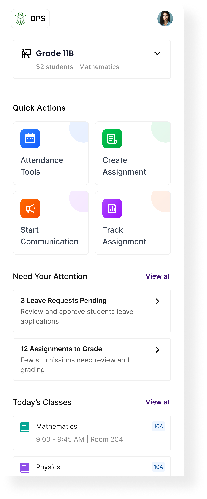

Teachers switch between registers, notebooks, and messaging platforms to manage different tasks, breaking their workflow.
Edtech / Classroom app
Classroom Management
A unified platform that simplifies assignments, attendance, and communication—bringing clarity to workflows and better visibility for teachers, students, and parents.

About the company
What is Embibe?
Embibe is an AI-powered education platform that helps students learn better through personalised content and insights. It uses data to understand where students are struggling and provides targeted practice and guidance across school and competitive exams.
The platform also supports schools and teachers by helping them track student progress and manage classrooms more efficiently. Embibe aims to make learning more effective for every student and is backed by Reliance Industries.
Understanding the problem
What did we learn from teachers?
To understand how teachers manage their daily classroom activities, we spoke with educators across different classroom contexts. The goal was to uncover how they currently handle attendance, assignments, and communication, and identify gaps in their existing workflows. These conversations helped us move beyond assumptions and understand the real challenges teachers face in their day-to-day routines.
Attendance and assignment tracking often require duplicate effort, making simple tasks time-consuming.
There’s no quick way to get a clear view of student progress or pending actions in one place.
Updates to parents are often inconsistent or delayed due to reliance on manual methods.
Solution
Simplifying classroom workflows
To address these challenges, we designed a unified classroom management experience that brings attendance, assignment tracking, and communication into one place. The goal was to reduce context switching and manual effort by creating a clear starting point for daily tasks, simplifying key actions, and enabling timely communication. By surfacing important actions and insights in a single view, the solution helps teachers stay organized and manage their classrooms with more clarity and less friction.
Design
The design approach
Screen 01
Centralized Homepage for Classroom Management
The homepage brings together key classroom actions, pending tasks, and the day’s schedule, helping teachers stay on top of their workflow without switching between sections.
Quick actions:
Direct access to attendance, assignments, and communication for faster task execution.
Pending tasks:
Highlights leave requests and submissions that need immediate attention.
Today’s schedule:
A clear view of classes with time and location for better planning.
Class context:
Quick access to class and subject details before taking action.

Class context Quick actions Pending tasks Today's scheduleCore Modules
The product is divided into four main modules so teachers can move from overview to action without leaving the same workflow.
A focused classwork flow that helps teachers create, organize, and manage assignments from setup to final review.
Learnings
Reflections from the Process
Designing this classroom management system made me realise that the real challenge isn’t feature complexity, but the number of decisions teachers make every day. The product needed to support performance tracking, attendance, assignments, behaviour, and communication without overwhelming them.
A key learning was the importance of clear mental models. Structuring the experience into a simple flow—assign → track → understand → act—made the system more intuitive and easier to navigate across modules, whether it was tracking performance, monitoring attendance, or communicating with parents.
I also learned that data is only valuable when it drives action. Highlighting insights like “Needs Attention” isn’t enough—teachers need clear next steps, whether it’s following up on low attendance, assigning extra practice, or reaching out to parents.
Finally, this project reinforced how information hierarchy and small UI details like status tags, filters, and visual cues play a big role in reducing cognitive load and helping teachers quickly move between tracking, insights, and communication.
View Other Projects
Keep exploring the work

Fintech / Lending
Improving how users move through a lending journey
A sharper look at reducing drop-offs, guiding decisions, and simplifying the path to disbursal.
Open case study
Fintech / Homepage
Rethinking the Homepage for Clarity, Discovery, and Growth
A design-led exploration of turning a single-use dashboard into a more scalable fintech experience.
Open case study
Personal Project
Guided Investing for Beginners
A structured investing system designed to reduce confusion for first-time users through clearer steps and guidance.
Open case study